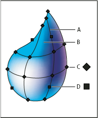

About mesh objects
A mesh object is a multicolored object on which colors can flow in different directions and transition smoothly from one point to another. When you create a mesh object, multiple lines called mesh lines crisscross the object and provide a way to easily manipulate color transitions on the object. By moving and editing points on the mesh lines, you can change the intensity of a color shift, or change the extent of a colored area on the object.
At the intersection of two mesh lines is a special kind of anchor point called a mesh point. Mesh points appear as diamonds and have all of the same properties as anchor points but with the added capability of accepting color. You can add and delete mesh points, edit the mesh points, or change the color associated with each mesh point.
Anchor points also appear in the mesh (differentiated by their square rather than diamond shape), and can be added, deleted, edited, and moved as with any anchor points in Illustrator. Anchor points can be placed on any mesh line; you can click an anchor point and drag its direction lines to modify it.
The area between any four mesh points is called the mesh patch. You can also change the color of the mesh patch using the same techniques as changing colors on a mesh point.

- A.
- Mesh line
- B.
- Mesh patch
- C.
- Mesh point
- D.
- Anchor point